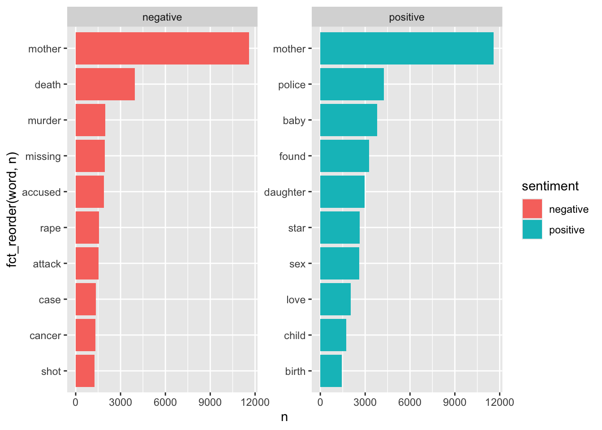
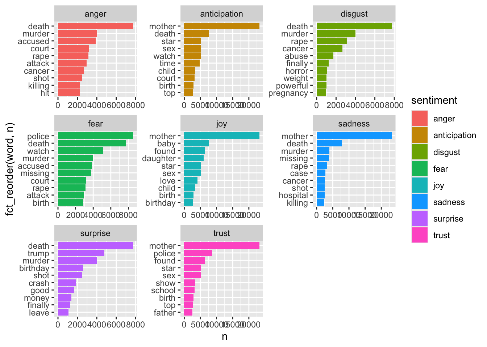

New names:
Rows: 382139 Columns: 7
── Column specification
──────────────────────────────────────────────────────── Delimiter: "," chr
(4): url, headline_no_site, site, country dbl (2): ...1, bias dttm (1): time
ℹ Use `spec()` to retrieve the full column specification for this data. ℹ
Specify the column types or set `show_col_types = FALSE` to quiet this message.
• `` -> `...1`
Dataset:
The dataset I found is comprised of headlines from the top 50 news publivations in the U.S., India, U.K., and South Africa that include keywords related to women (“women OR woman OR girl OR female OR lady OR ladies OR she OR her OR herself OR aunt OR grandmother OR mother OR sister”).
Variables:
url
headline
site
time
country
bias (not sure what this represents at this point, i think just a bias score)
Ideas:
sentiment of headlines by country
what words are commonly included
word clouds?
headlines_tidy <- headlines |>unnest_tokens(output = word, input = headline_no_site)headlines_tidy
# A tibble: 4,577,378 × 7
...1 url site time country bias word
<dbl> <chr> <chr> <dttm> <chr> <dbl> <chr>
1 0 https://www.iol.co.za/en… iol.… 2018-02-23 08:00:00 South … 0 lady
2 0 https://www.iol.co.za/en… iol.… 2018-02-23 08:00:00 South … 0 bird
3 0 https://www.iol.co.za/en… iol.… 2018-02-23 08:00:00 South … 0 buzz…
4 0 https://www.iol.co.za/en… iol.… 2018-02-23 08:00:00 South … 0 thro…
5 0 https://www.iol.co.za/en… iol.… 2018-02-23 08:00:00 South … 0 young
6 0 https://www.iol.co.za/en… iol.… 2018-02-23 08:00:00 South … 0 sexu…
7 1 https://www.iol.co.za/en… iol.… 2018-01-10 08:00:00 South … 0.167 the
8 1 https://www.iol.co.za/en… iol.… 2018-01-10 08:00:00 South … 0.167 shad…
9 1 https://www.iol.co.za/en… iol.… 2018-01-10 08:00:00 South … 0.167 urban
10 1 https://www.iol.co.za/en… iol.… 2018-01-10 08:00:00 South … 0.167 pop
# ℹ 4,577,368 more rows
Data Tidying
word <-c("woman", "women", "girl", "female", "lady") # these words are more popular in this data set, yet do not reveal much about the headlinesfeminine_words <-tibble(word)headlines_tidy |>anti_join(feminine_words) |>anti_join(stop_words) |>count(word, sort =TRUE) |>filter(n >=10) |>print(n =20)
Joining with `by = join_by(word)`
Joining with `by = join_by(word)`
# A tibble: 21,825 × 2
word n
<chr> <int>
1 mother 23243
2 sister 9999
3 police 8532
4 death 7740
5 baby 7577
6 life 7214
7 found 6404
8 day 6312
9 video 6205
10 daughter 5964
11 killed 5941
12 home 5669
13 dies 5587
14 black 5534
15 reveals 5495
16 gaga 5362
17 arrested 5199
18 star 5195
19 sex 5193
20 world 5170
# ℹ 21,805 more rows
Joining with `by = join_by(word)`
Joining with `by = join_by(word)`
Warning in inner_join(anti_join(headlines_tidy, feminine_words), nrc_sentiments): Detected an unexpected many-to-many relationship between `x` and `y`.
ℹ Row 9 of `x` matches multiple rows in `y`.
ℹ Row 12532 of `y` matches multiple rows in `x`.
ℹ If a many-to-many relationship is expected, set `relationship =
"many-to-many"` to silence this warning.
# A tibble: 10 × 2
sentiment n
<chr> <int>
1 positive 279235
2 negative 252157
3 trust 194116
4 fear 184754
5 anticipation 155032
6 sadness 150249
7 joy 146956
8 anger 128985
9 surprise 74472
10 disgust 73048
headlines_tidy |>anti_join(feminine_words) |>inner_join(nrc_sentiments) |>filter(sentiment ==c("positive", "negative")) |>count(sentiment, word, sort =TRUE) |>group_by(sentiment) |>slice_max(n, n =10) |>ungroup() |>ggplot(aes(x =fct_reorder(word, n), y = n, fill = sentiment)) +geom_col() +coord_flip() +facet_wrap(~ sentiment, scales ="free")
Joining with `by = join_by(word)`
Joining with `by = join_by(word)`
Warning in inner_join(anti_join(headlines_tidy, feminine_words), nrc_sentiments): Detected an unexpected many-to-many relationship between `x` and `y`.
ℹ Row 9 of `x` matches multiple rows in `y`.
ℹ Row 12532 of `y` matches multiple rows in `x`.
ℹ If a many-to-many relationship is expected, set `relationship =
"many-to-many"` to silence this warning.

headlines_tidy |>anti_join(feminine_words) |>inner_join(nrc_sentiments) |>count(sentiment, word, sort =TRUE) |>filter(sentiment !="positive", sentiment !="negative") |>group_by(sentiment) |>slice_max(n, n =10) |>ungroup() |>ggplot(aes(x =fct_reorder(word, n), y = n, fill = sentiment)) +geom_col() +coord_flip() +facet_wrap(~ sentiment, scales ="free")
Joining with `by = join_by(word)`
Joining with `by = join_by(word)`
Warning in inner_join(anti_join(headlines_tidy, feminine_words), nrc_sentiments): Detected an unexpected many-to-many relationship between `x` and `y`.
ℹ Row 9 of `x` matches multiple rows in `y`.
ℹ Row 12532 of `y` matches multiple rows in `x`.
ℹ If a many-to-many relationship is expected, set `relationship =
"many-to-many"` to silence this warning.

Bing
bing_sentiments <-get_sentiments(lexicon ="bing")headlines_tidy |>anti_join(feminine_words) |>inner_join(bing_sentiments) |>count(sentiment, word, sort =TRUE)
Joining with `by = join_by(word)`
Joining with `by = join_by(word)`
Warning in inner_join(anti_join(headlines_tidy, feminine_words), bing_sentiments): Detected an unexpected many-to-many relationship between `x` and `y`.
ℹ Row 644621 of `x` matches multiple rows in `y`.
ℹ Row 6090 of `y` matches multiple rows in `x`.
ℹ If a many-to-many relationship is expected, set `relationship =
"many-to-many"` to silence this warning.
# A tibble: 4,548 × 3
sentiment word n
<chr> <chr> <int>
1 negative death 7740
2 negative killed 5941
3 negative dies 5587
4 negative dead 4902
5 positive like 4877
6 positive trump 4783
7 positive love 4116
8 negative murder 3988
9 negative raped 3284
10 positive best 3239
# ℹ 4,538 more rows
headlines_tidy |>anti_join(feminine_words) |>inner_join(bing_sentiments) |>count(sentiment, word, sort =TRUE) |>group_by(sentiment) |>slice_max(n, n =10) |>ungroup() |>ggplot(aes(x =fct_reorder(word, n), y = n, fill = sentiment)) +geom_col() +coord_flip() +facet_wrap(~ sentiment, scales ="free")
Joining with `by = join_by(word)`
Joining with `by = join_by(word)`
Warning in inner_join(anti_join(headlines_tidy, feminine_words), bing_sentiments): Detected an unexpected many-to-many relationship between `x` and `y`.
ℹ Row 644621 of `x` matches multiple rows in `y`.
ℹ Row 6090 of `y` matches multiple rows in `x`.
ℹ If a many-to-many relationship is expected, set `relationship =
"many-to-many"` to silence this warning.
commentary on word cloud: - a few proper nouns like gaga (referring to lady gaga) and trump (the U.S. president at the time), India, etc. - many negative words - mother being the most popular - a lot of words referring to men… - numbers (maybe filter those out with a str_ function)